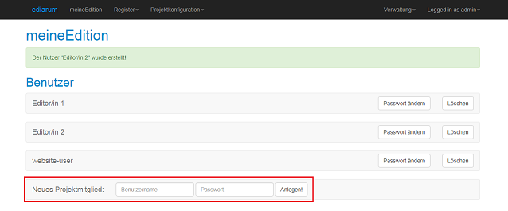

Die Nutzer-Accounts in der ediarum.DB-App sind Voraussetzung, damit die
Editor/innen ihre Oxygen-Instanzen mit der eXist-db verbinden können.
Sie haben in Ihrer eXist-db die ediarum.DB-App mit Admin-Rechten
geöffnet.
Sie benötigen mindestens einen Nutzer-Account, um im späteren Setup-Verlauf die
Datenbankanbindung konfigurieren zu können. Wenn Sie möchten, können Sie gleich weitere
Nutzer-Accounts anlegen - pro Editor/in einen Account.
-
Wählen Sie das Menü aus.
-
Klicken Sie Ihr Projekt an, um die Übersichtsseite des Projekts zu
öffnen.
-
Wählen Sie das Menü aus.
-
Geben Sie im Feld Neues Projektmitglied einen
Benutzernamen und ein Passwort ein.
Der Benutzername ist der Name, den Sie später für die Datenbankanbindung
angeben müssen. Verwenden Sie keine Umlaute, Leer- oder Sonderzeichen!

-
Klicken Sie auf Anlegen.